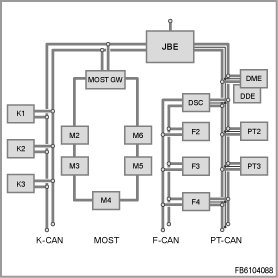

Schematic Circuit Diagram, Bus Diagnosis
Schematic Circuit Diagram, Bus Diagnosis
The following block diagram provides an overview of the control modules and bus systems deployed in the vehicle.

- JBE (Junction Box Electronics)
- control module with connection to K-CAN, PT-CAN and diagnosis lead
- MOST GW is a placeholder for e.g. CCC (Car Communication Computer), M-ASK (Multi Audio System Controller), RAD (radio) or CHAMP (Central Head Unit and Multimedia Platform)
- control module with connection to K-CAN and MOST
- DSC (Dynamic Stability Control)
- control module with connection to F-CAN and PT-CAN
- K1 ... Kn: control modules on the K-CAN
- M1 ... Mn: control modules on the MOST
- F1 ... Fn: control modules on the F-CAN
- PT1 ... PTn: control modules on the PT-CAN